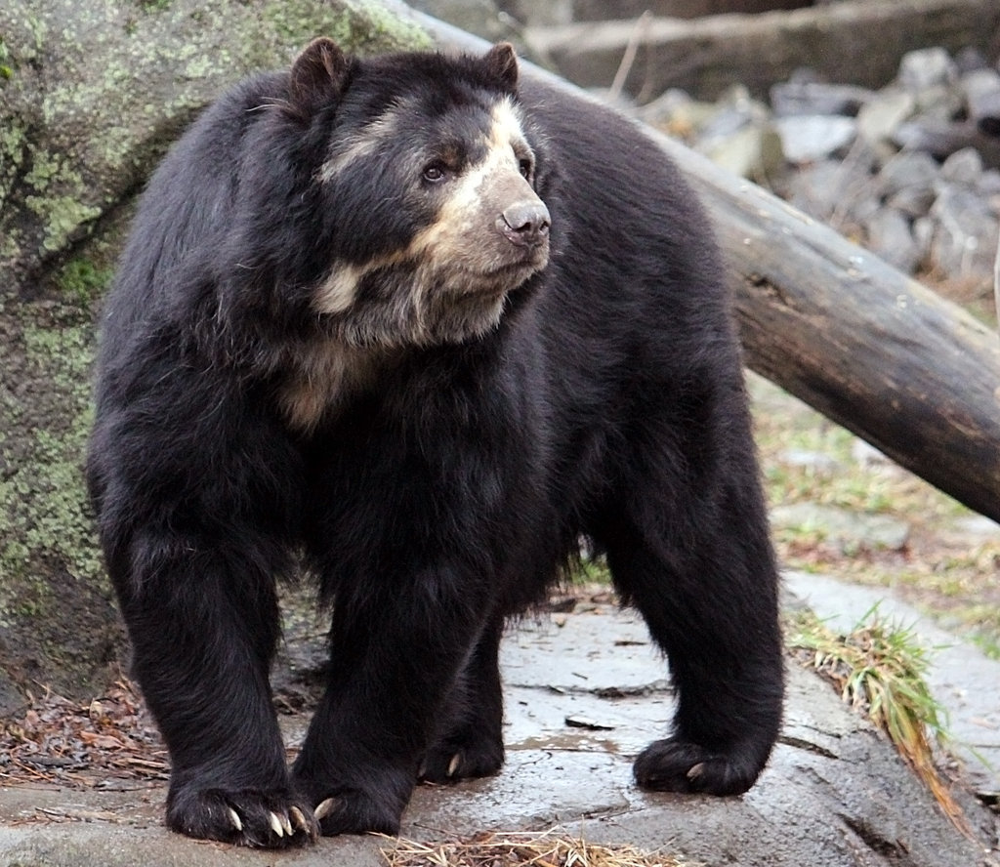

Bear in the Wild
Bears are found in North America, South America, Asia and Europe. The Atlas bear, a subspecies of the brown bear, was the only bear native to Africa and was distributed from Morocco to Libya. It has been extinct since about the 1970s. There are no bears in Australia or Antarctica.
Bears come in all shapes and sizes. Here are some of the most common bear species.
-
American Black Bear, Ursus americanus
American black bears are widely distributed throughout the forested areas of North America. They are the continent’s smallest and most common bear and are present in 32 states of the USA, in all provinces and territories of Canada except Prince Edward Island, and in northern Mexico.
Most commonly found in forested areas, American black bears avoid open areas as trees provide an excellent means of escape from the larger brown bear. They have however become established on the tundra of northern Labrador in Canada, an area where there are no brown bears.
-
Andean Spectacled Bear, Tremarctos ornatus
Andean bears are South America’s only bear and are found in the Andean cloud forests at heights of up to 4,300 metres (14,000 feet) in Bolivia, Chile, Colombia, Ecuador and Peru. Largely but not exclusively vegetarian, bears will descend in search of food and have been observed in steppe lands and coastal deserts.
Small and shy, the bears are largely nocturnal. Males are up to two metres in length and weigh up to about 154 kilograms. Females are considerably smaller weighing up to around 82 kilograms. The shaggy coat varies in colour and can be black, brown or reddish with a lighter colouration often present on the upper chest, muzzle and around the eyes. These latter markings give the bear its common name of “spectacled bear”.
-
Brown Bear, Ursus arctos
The brown bear is the most widely distributed of all bears and is widespread in the forests and mountains of North America, Europe and Asia with a relatively large global population that is currently stable. There are a number of sub-species. The bears’ principal range includes parts of Russia, the United States, Canada, the Carpathian region (especially in Romania), the Balkans, Sweden and Finland.
Brown bears are omnivorous and typically are solitary animals, except for females with cubs. However, at times certain populations do congregate; for example large gatherings occur during the Alaskan salmon spawning run (see photograph). Dozens of bears may gather to feed on the fish to rapidly build up energy stores for their winter hibernation. They may eat as much as 40 kilograms of food each day.
-
Panda Bear, Ailuropoda melanoleuca
Giant pandas are found in the mountainous regions of the central Chinese provinces of Sichuan, Shaanxi and Gansu, typically at elevations between 1,500 and 3,000 metres but up to 4,000 metres. They occupy broadleaf and coniferous rain forests with dense under-storeys of bamboo, which forms 99 percent of their diet.
Around the same size as the Asiatic black bear pandas are between 120 to 180 cm long, males weigh between 90 kg to 160 kg and females 75 kg to 125 kg. The bears have black ears, eye patches, muzzles, legs and shoulders with the rest of their thick fur being white. The subspecies Ailuropoda melanoleuca qinlingensis (the Qinling panda) has fur which is dark brown and light brown rather than black and white.
-
Polar Bear, Ursus maritimus
Polar bears are found throughout the Arctic and are the only bear species classified as a marine mammal. There are polar bear populations in the territories of Canada, Denmark (Greenland), Norway, Russia and the USA (Alaska).
Although polar bears are omnivores, their diet consists almost exclusively of meat, primarily ringed and bearded seals hunted on the sea ice. They also eat other mammals and will utilise carrion such as whales. When meat is unobtainable they will forage for eggs, seaweed, grasses, moss and lichens.
-
Sloth Bear, Melursus ursinus
Sloth bears are found in Sri Lanka, India, Bhutan and Nepal, predominantly in lowland areas. There may still be bears in the wet forests of Bangladesh but this is by no means certain. They inhabit both dry and moist deciduous forests and grasslands.
Mostly nocturnal the bears are omnivorous with termites and ants the main constituents of their diet. The bears use their claws to open the insects’ mounds and nests, sucking them up through a gap in their front teeth. They are also very fond of honey, hence their alternative name of “honey bear”.